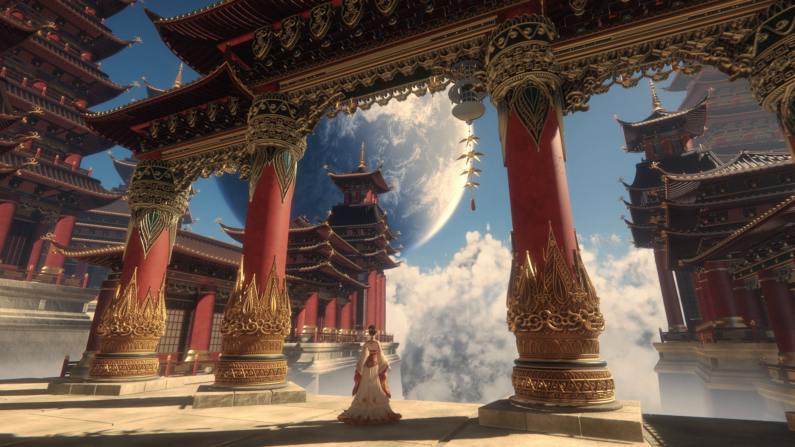
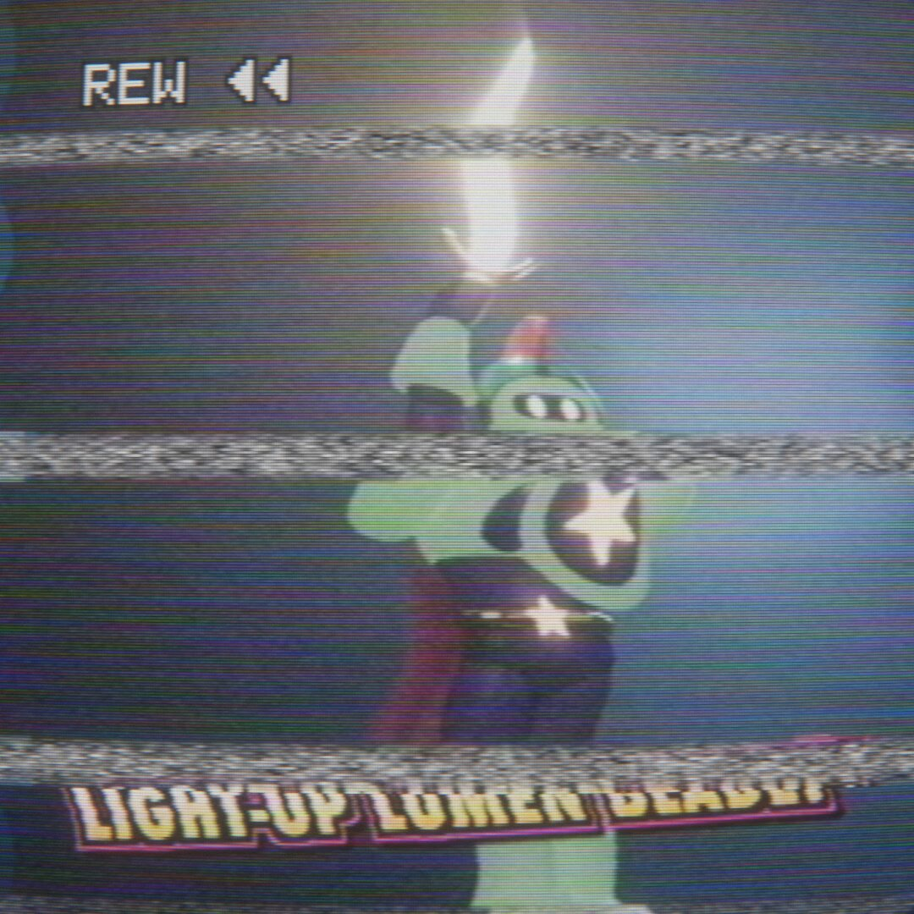

Fable 5.2 接入 Blender Pat Simmons · Fable 5.2 · 过程展示 2026-11-14 过程展示：让 Fable 5.2 控制 Blender，做了建筑飞穿和一个带故事的恐怖游戏。 视频
Python + Blender 广告 Marcus · Fable 5.2 2026-11-13 用 Claude Code 写 Python，不必亲手打开 Blender，做出三维香水广告。配套 skill pack 在站外。 教程
 Astral Realm Scott · Three.js 2026-11-13 用 Claude Fable 5.2 制作，在 Three.js 里渲染。除角色外都是程序生成。 原帖
No External Assets Chetaslua · Three.js 2026-11-13 用 Claude Fable 5.2 和 Three.js 做的三维成片。作者写明成片没有外部素材。 原帖
Animated Show Intro Kevin Ngo · Python + Blender 2026-11-11 Claude Fable 5.2 做的动画节目片头。画面是代码：Python 做动画，Blender 渲染。 原帖
 90's Toy Commercial Kevin Ngo · Python + Blender 2026-11-10 Claude Fable 5.2 做的 90 年代玩具广告。画面是代码：Python 做动画，Blender 渲染。 原帖
Portals Ethan Mollick · 471 个世界 2026-11-10 一场不用操作的飞行。每个世界都是代码在浏览器里现场生成的场景，门里已经是下一个世界，没有剪辑，也没有淡入淡出。 打开演示 源代码
What the water keeps Kevin Ngo · 可在浏览器里玩 2026-11-10 坐船穿过 8 个梦境世界。作者写明由 Claude Fable 5.2 做成，画面在网页里当场画出来。 打开演示 原帖
The Moss Keeper Chetaslua · 单文件 HTML 2026-11-02 苔藓巨人与森林的代码动画短片：日出时，长满苔藓的巨人在遗忘的森林里醒来。学习用代码组织绘画质感、场景和镜头。 打开演示 源代码 原帖
JavaScript 逐帧 Chase AI · 相邻工作流 2026-10-07 用 Claude Code 写 JavaScript 逐帧画完，再用 Playwright 和 FFmpeg 拼成视频。 教程